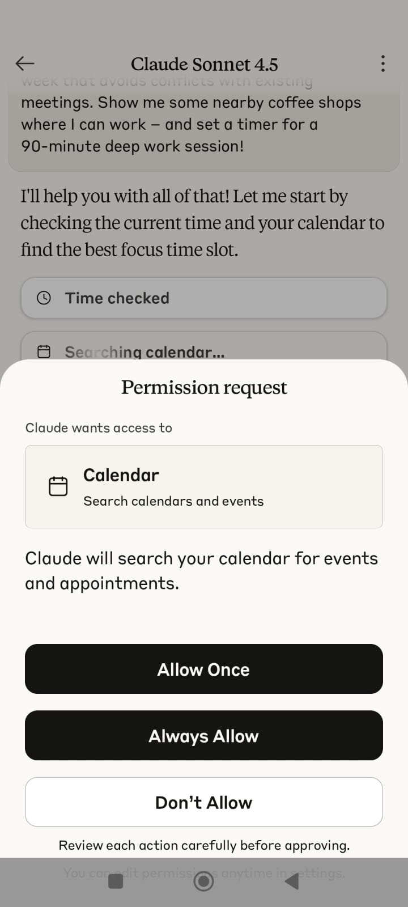

Claude Identifies Need & Requests Permission
Claude analyzes the request, checks current time, and realizes it needs calendar access to find focus time slots. A permission dialog appears requesting calendar access.

Permission Request: Calendar - Search calendars and events
"Claude will search your calendar for events and appointments."
Options: Allow Once | Always Allow | Don't Allow
"Review each action carefully before approving."
Just-in-Time Permission: Permission requested exactly when needed, with clear context about why.